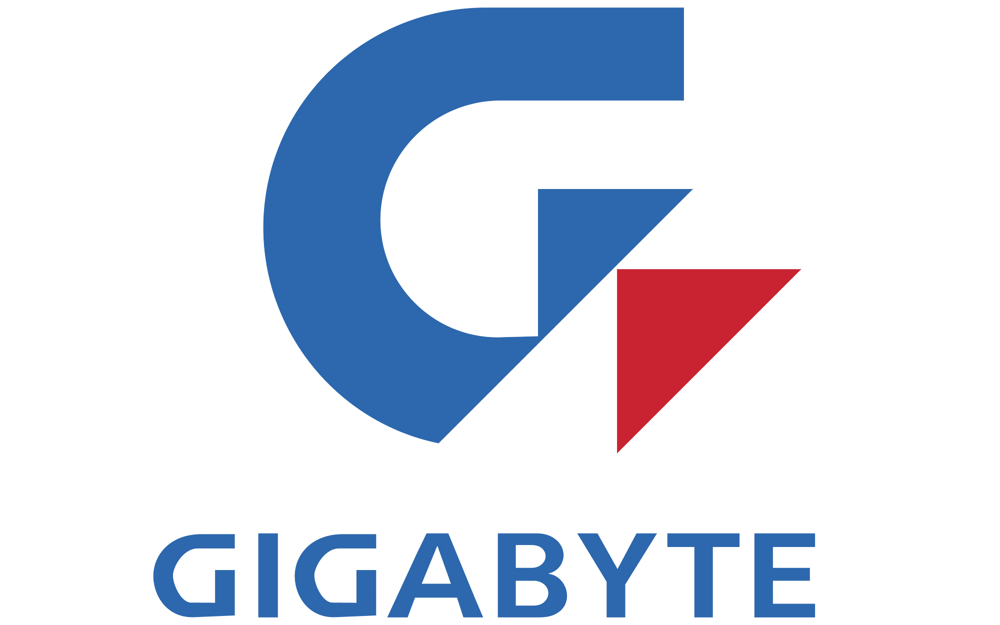

¿Tu consola te está dando problemas? No te preocupes. En Supertec, somos expertos en la reparación de PlayStation, Xbox y Nintendo. Solucionamos desde los errores más comunes (fallas de encendido, sobrecalentamiento, lectura de discos) hasta los más complejos, como reparaciones de puertos HDMI, reballing y cortocircuitos.
Además, entendemos que tu experiencia de juego depende de tu control. Por eso, también reparamos joysticks con problemas de drift, botones que no responden o fallas de conexión. Y si quieres optimizar tu consola, realizamos mantenimientos preventivos con pasta térmica y metal líquido de las mejores marcas, para que nunca te quedes a mitad de una partida.

Más allá de los videojuegos, tu vida digital también importa. Ofrecemos un servicio integral para notebooks, laptops, ultrabooks y Macbooks. Ya sea que necesites reemplazar una pantalla, un teclado, una batería o solucionar problemas de rendimiento y software, estamos aquí para ayudarte.
¿Tu PC de escritorio o tu placa de video están fallando? Somos especialistas en reparaciones avanzadas a nivel de componente, incluyendo reballing y reparación de motherboards. Y si tu iPhone, tablet o smartphone sufrió un accidente, confía en nuestros expertos para cambiar la pantalla, reparar el puerto de carga o solucionar fallas complejas de la placa base, incluso en casos de daño por líquidos.
En Supertec, tu tecnología está en las mejores manos.
Reparamos una amplia gama de equipos electrónicos, incluyendo consolas de videojuegos (PlayStation, Xbox, Nintendo, etc.), notebooks y computadoras portátiles, motherboards, CPUs, placas de video (GPU) y teléfonos móviles y tablets (con especialización en iPhone). También ofrecemos servicio de reparación de joysticks.
Sí, nuestra especialidad es la reparación microelectrónica de alta complejidad. Contamos con un laboratorio de última generación y técnicos certificados para realizar trabajos como reballing, reemplazo de chipsets y diagnósticos avanzados en placas base y GPUs.
Atendemos a ambos. Brindamos soporte técnico de alta calidad a clientes finales que buscan soluciones confiables para sus dispositivos personales, y también ofrecemos servicios especializados para el gremio, con tarifas preferenciales y soporte técnico avanzado.
Si te encuentras fuera de Godoy Cruz, Mendoza, podés enviarnos tus equipos con total confianza. Contamos con un sistema logístico optimizado para recibir y devolver dispositivos de todo el país. Una vez que recibimos tu equipo, realizamos el diagnóstico, te informamos sobre la reparación y, una vez finalizada, te lo enviamos de vuelta en perfectas condiciones. Te guiaremos en cada paso del proceso de envío.
El tiempo de reparación varía según la complejidad de la falla y la disponibilidad de componentes. Una vez realizado el diagnóstico inicial, te brindaremos un plazo estimado para la entrega de tu equipo. Podrás acceder a un sistema web para ver el estado de tu equipo.
Sí, todas nuestras reparaciones cuentan con garantía, cubriendo la falla específica reparada y los componentes reemplazados. Los detalles de la garantía se especificarán al momento de la entrega del equipo reparado.
Podés contactarnos a través de whatsapp al 2615031101. Estaremos encantados de asesorarte y resolver tus dudas.
Visita nuestro local y conoce el laboratorio donde ocurre la magia. Estamos listos para recibirte.
Ver en Google Maps